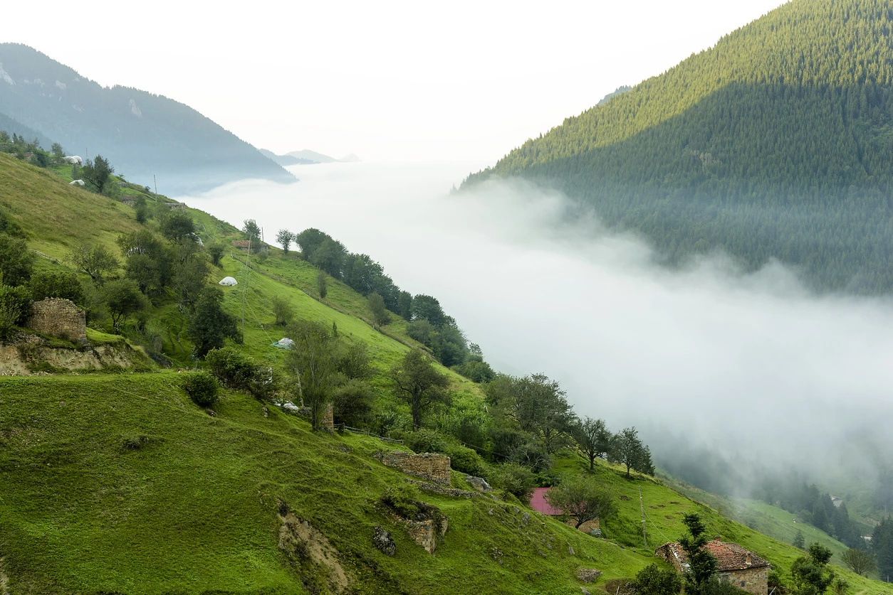
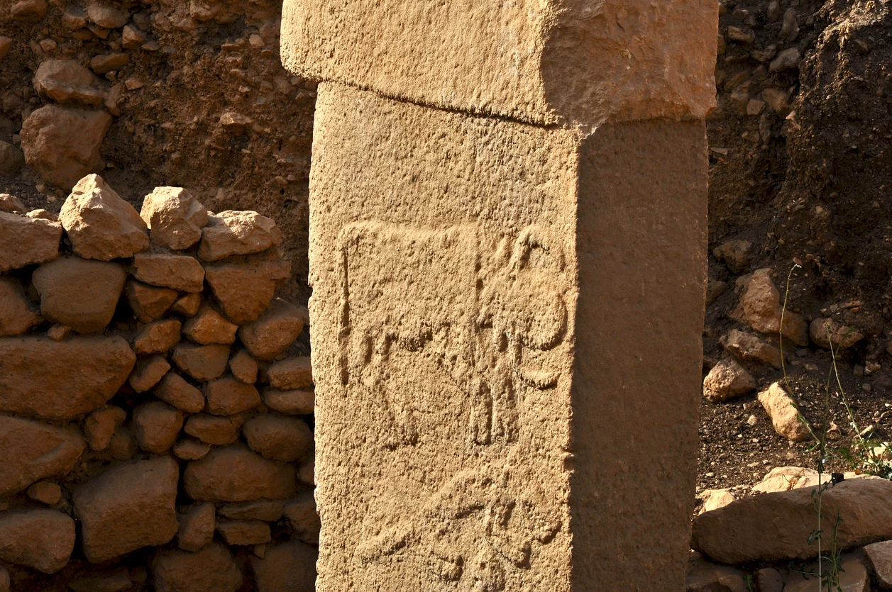
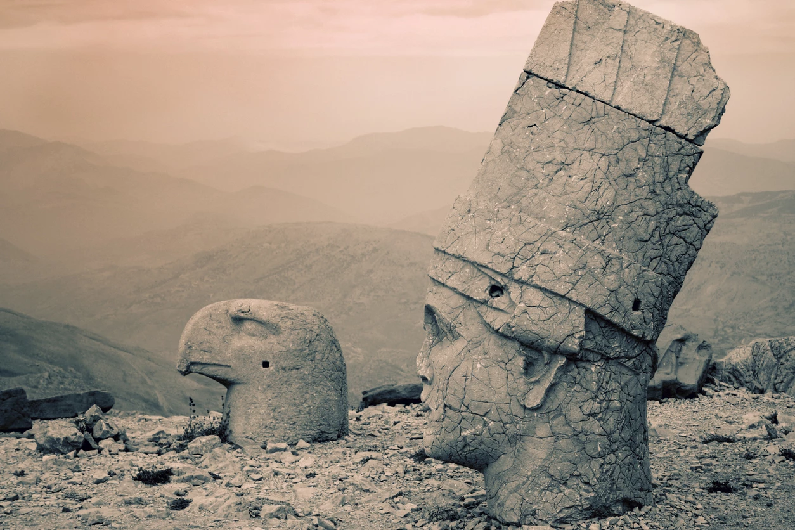

Likya Yolu Yürüyüşü

Türkiye’de yapılabilecek en kapsamlı doğa aktivitelerinden biri, Likya Yolu yürüyüşü. Bu yürüyüşün uzun versiyonu toplamda 535 kilometre sürüyor ve bir insanın tamamlayabilmesi için en az üç hafta gerekiyor. Yol, Fethiye ile Antalya arasını kapsıyor. Tabii ki bu yürüyüşe tamamen hazırlanmış olmak gerekiyor; çünkü yollar zorlu, ama doğanın kendisi çok huzurlu… Her yıl yaklaşık 10 bin kişi tarafından yürünen bu yolda daha kısa rotalar da mevcut. Örneğin Kaş ile Çıralı arasını yürümek isterseniz sadece 110 kilometrelik bir parkuru tamamlamanız gerekiyor.
Karadeniz Turu
Türkiye’de tatil yapacaksanız ve ülkedeki en yeşil bölgeyi ziyaret etmek istiyorsanız gitmeniz gereken yer belli: Karadeniz. El değmemiş doğası, dağlık arazisi ve bu arazinin bir getirisi olan yaylaları ile pek meşhur. Ülkenin en yüksek rakımlı yaylalarında oksijen seviyesi o kadar yüksek ki eğer metropolden gelen biriyseniz ve duruma alışık değilseniz oksijen seviyesi sizi çarpabilir. Karadeniz turunda görülecek pek çok şehir, tadılacak birçok lezzet ve keşfedilecek birçok tarihi eser var. Bolu, Karabük, Bartın, Amasya, Ordu, Giresun, Gümüşhane, Trabzon, Rize ve Artvin, bu tur dahilinde görülebilecek yerler. Bu noktada iki şehri ayırmak gerekiyor: Rize ve Artvin. Karadeniz’in bu iki şehri, el değmemiş doğası ile insanı mest ediyor.
Göbeklitepe Gezisi
Türkiye gezisinde görülebilecek en eski yer, MÖ 10.000 yılına tarihlenen Göbeklitepe Tapınağı. Dünyanın en eski tapınaklarından biri olduğu ortaya çıkınca bilinen tarihi değiştiren Göbeklitepe, “Peygamberler Şehri” olarak bilinen Şanlıurfa’da bulunuyor. İngiltere’de bulunan Stonehenge’den 7000, Mısır Piramitleri’nden ise 7500 yıl daha yaşlı olan bu tapınak, hâlâ gizemini koruyor ve arkeologlar da burada çalışmaya devam ediyor.
Nemrut Dağı Gezisi
Türkiye tatilinde insan her dakika yeni bir şey öğrenebilir ve medeniyetimizin aslında ne kadar da mucizevi olduğunu keşfedebilir. İşte, Nemrut gezisi, tam da bu mucizelere tanıklık edebileceğiniz bir yer. Adıyaman ilinde bulunan Nemrut Dağı, Kommagene Kralı I. Antiochos tarafından yaptırılan anıt mezarı ve dev kafa heykellerini görebileceğiniz bir yer. Helenistik dönemin gizemi sizi çekiyorsa Türkiye turizmi denilince akla gelen ilk yerlerden Nemrut Dağı’nı görülecek yerler listenize ekleyin.